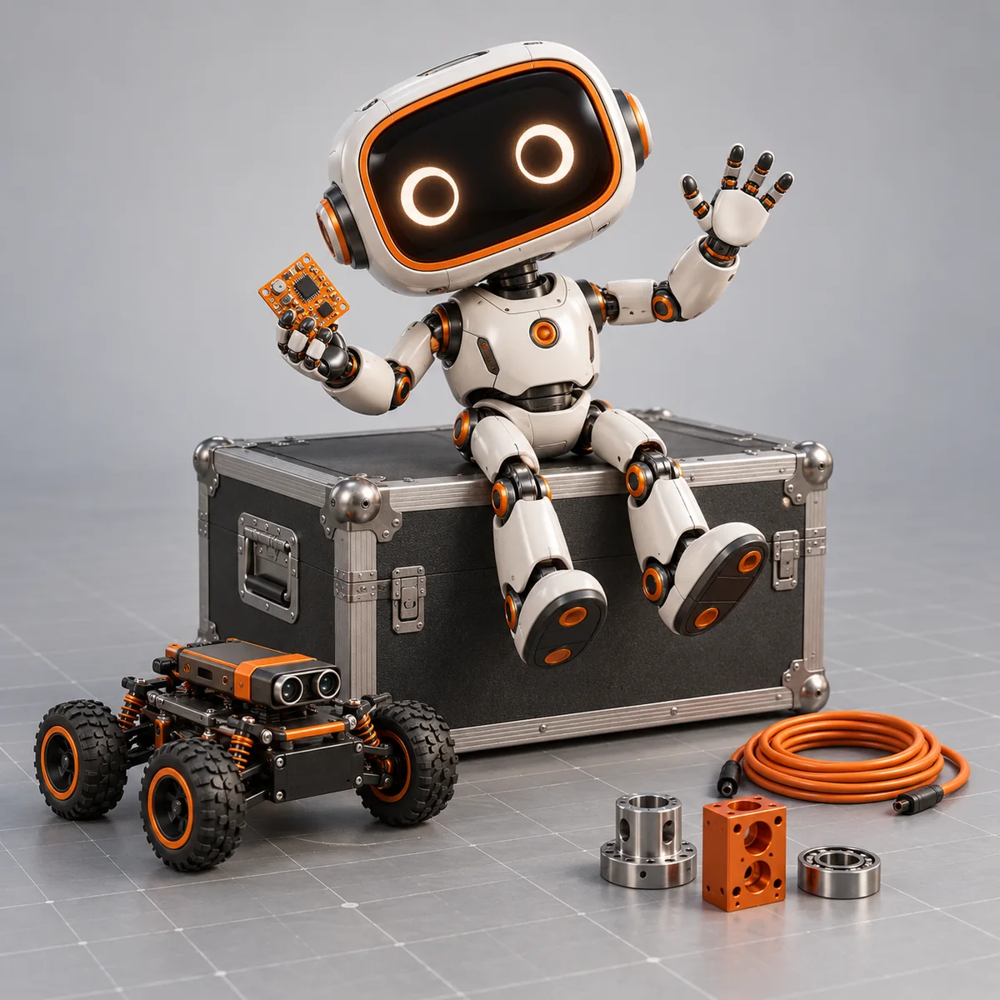
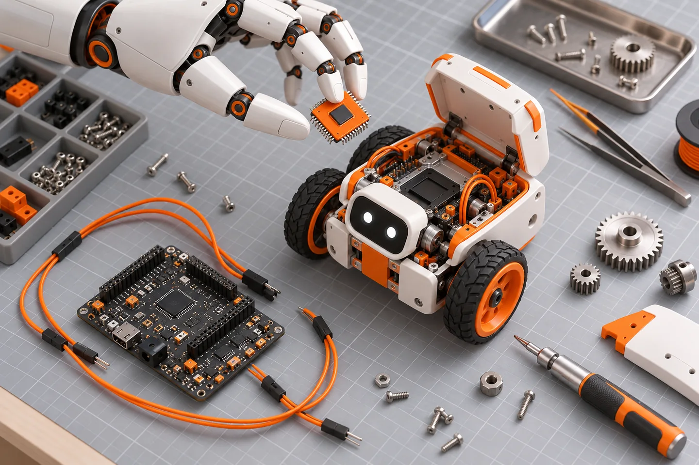

Ask the odd question.
“I don’t know yet” is a perfectly good place to start.
[ HELLO, WE’RE SAC. ]
For the people who look at a machine and think,
“What if we built that?”

We connect curious people.
Then we connect a few wires.
SAC is the Sensing and Automation Club—a student community exploring the space where code meets the physical world.
Robotics, AI, embedded systems, and automation are our playground. We’re here to turn questions into experiments, learn from the messy middle, and build things together.
A sensor notices. Code makes a decision.
A motor brings it to life.
We love the whole chain.
Light, distance, motion, temperature. We explore how sensors turn everyday surroundings into signals we can work with.
START WITH: “WHAT CAN WE MEASURE?”From a first microcontroller program to a model that recognises patterns, we explore the decisions that make a system useful.
START WITH: “WHAT SHOULD HAPPEN NEXT?”Connect the signals to something that moves. Motors, mechanisms, and feedback turn lines of code into real-world action.
START WITH: “CAN WE MAKE IT MOVE?”
A small problem. A strange idea. A thing you can’t stop thinking about.
Try it, test it, and find out what the sketch didn’t tell you.
Share the fix, ask for another perspective, and make the next version better.
“I don’t know yet” is a perfectly good place to start.
A different perspective can be the missing piece in your project.
Share what worked—and what didn’t—so someone else can go further.